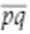

33.4. The Slippery Slope
Instead of drawing a line through two points and seeing whether the third point is on the line, suppose I drew all three lines and checked to see whether they are really the same line. Actually, I would need to draw only two of the lines, because if line  is identical to line , it must also be equal to  . Furthermore, it turns out I need to compare only the slopes, not the y-intercepts. (Do you see why?) Judging by eye whether two lines are really coincident or form a narrow scissors angle might not be the most reliable procedure, but in the computational world, it comes down to a simple comparison of two numbers, the m values (see Figure 33-3).
. Furthermore, it turns out I need to compare only the slopes, not the y-intercepts. (Do you see why?) Judging by eye whether two lines are really coincident or form a narrow scissors angle might not be the most reliable procedure, but in the computational world, it comes down to a simple comparison of two numbers, the m values (see Figure 33-3).
Figure 33-3. Testing collinearity by comparing slopes
I wrote a new version of collinear as follows:
(defun mm-collinear (px py qx qy rx ry) (equalp (slope px py qx qy) (slope qx qy rx ry)))
What an improvement! This looks much simpler. There's no if expression calling attention to the distinguished status of vertical lines; all sets of points are treated the same way.
I must confess, however, that the simplicity and the apparent uniformity are an illusion, based on some Lisp trickery going on behind the scenes. Note that I compare the slopes not with = but with the generic equality predicate equalp. The procedure works correctly only because equalp happens to do the right thing whether slope returns a number or nil. (That is, the two slopes are considered equal if they are both the same number or if they are both nil.) In a language with a fussier type system, the definition would not be so sweetly concise. It would have to look something like this:
(defun typed-mm-collinear (px py qx qy rx ry) (let ((pq-slope (slope px py qx qy)) (qr-slope (slope qx qy rx ry))) (or (and (numberp pq-slope) (numberp qr-slope) (= pq-slope qr-slope)) (and (not pq-slope) (not qr-slope)))))
This is not nearly as pretty, although even in this more-explicit form, the logic seems to me less tortured than the "naïve" version. The reasoning is that and are the same line if the slopes are both numbers and those numbers are equal, or if both slopes are nil. And, anyway, should one penalize a clever Lisp program just because other languages can't do the same trick?
I would have been willing to call it quits at this point and accept mm-collinear as the final version of the program, but for another anomaly that turned up in testing. Both mm-collinear and less-naive-collinear could successfully discriminate between collinear points and near misses; a case like p=(0 0), q=(1 0), r=(1000000 1) was not a challenge. But both procedures failed on this set of points: p=(0 0), q=(0 0), r=(1 1).
A first question is what should happen in this instance. The program is supposed to be testing the collinearity of three points, but here p and q are actually the same point. My own view is that such points are indeed collinear because a single line can be drawn through all of them. I suppose the opposite position is also defensible, on the grounds that a line of any slope could be drawn through two coincident points. Unfortunately, the two procedures, as written, do not conform to either of these rules. They return nil for the example given above but t for the points p=(0 0), q=(0 0), and r=(0 1). Surely this is pathological behavior by anyone's standards.
I could solve this problem by edict, declaring that the three arguments to the procedure must be distinct points. But then I'd have to write code to catch violations of the rule, raise exceptions, return error values, scold criminals, etc. It's not worth the bother.